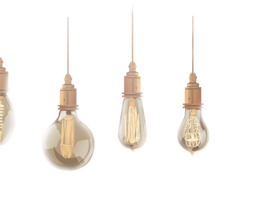
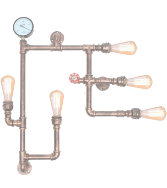
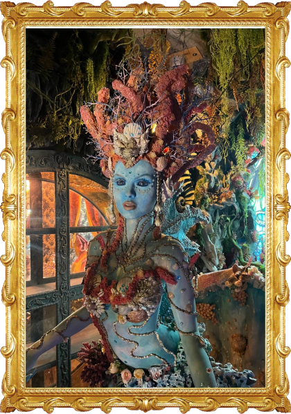

О музее
 О музее
Есть улица в Петербурге, где сквозь толщу стен можно услышать, как шумит океан, увидеть настоящую русалку, пройтись по дну морскому. В лабиринтах водорослей и подводных гротов ждет гостей Морской Царь, Садко играет на гуслях волшебные песни да таится легендарная Атлантида. Создатель да хранитель этого музея - ученый и мореплаватель Аристарх Поликарпович Демидов-Поплавский, что все моря избороздил, через сотни штормов прошел да невредим остался. Собрал все чудеса подводные в одном месте, и кто захочет взглянуть на них того он с радостью встретит на улице Декабристов 37.
Легенда
Легенда...
Ученый, инженер, изобретатель да путешественник. Большую часть жизни в море-океане провел. В странствиях флору да фауну разных мест исследует. Многими наукамиза жизнь свою долгую овладел, да особо ему полюбились: малакология, наука о моллюсках; энтомология, что насекомых изучает; ихтиология, рыб морских хозяйка; герпетология, чешуйчатых рептилий рассказчица, криптозоология - наука о чудищах разных; и океанология, что моря да океаны описывает. С юных лет исследования ведет да книги научные пишет, все хранит с особой бережностью да завсегда с собою возит.
Много тайн и загадок окружает ученого, покрыто тайной его прошлое, молчалив и скрытен в настоящем, да с улыбкой глядит в будущее. Говорят, что находился он на борту печально известного «Титаника», пошел вместе с кораблем ко дну, да там и остался. Но не утоп Аристарх Поликарпович, а освоился, под водой дышать научился; свел дружбу с самим Морским Царем, песни вместе с Садко сочинял, Одиссея в его странствиях сопровождал, Медузе Горгоне комплименты делал. Прошел он самые темные морские омуты, чудищ не убоявшись - и страшного Водомута видел, и от Жутня спасался и с Ведьмами морскими разговоры вел.
Приглашаем посетить Музей
Железной воли человек, Аристарх Поликарпович,гордый, решительный, но милосердный и всей душой в море влюбленный. Говорит о себе: «Всю свою жизнь я делал добро, когда мог, и зло, когда это было необходимо. Прощать обиды врагам — не значит быть справедливым».
Постоянно в путешествиях находится, миры разные изучает, да морские боле других любит, всю жизнь его водные глубины манят. Пол жизни провел за штурвалом корабля своего верного. В море-океане чудеса искал, весь мир повидал, да сказания древние записывал.
Много остров мистических видел, говорят к самой Атлантиде - жемчужине дна морского, хранящую сотни кладов и тысячи тайн однажды спустился. Добр капитан и справедлив, никого в беде не бросит, а в благодарность за помощь не золото, а услугу просит - сказку рассказать, аль историю волшебную, но и от подарка ценного не откажется, коль от всего сердца предложат.
Большой ценитель искусства разного, на корабле его много шедевров: картины, скульптуры, драгоценности редкие, книги древние, да коллекции разные. Диковинны капитан собирает - ракушки, монеты, да насекомых редких. Как прибудет в новый край, так сачок берет и отправляется энтомологию местную исследовать - бабочек редких да жучков причудливых изучать, коллекцию пополнять.

Билеты
Купить билет
Онлайн билет дает право пройти без очереди за 5-10 минут до начала сеанса (времени указанного на билете).
Стоимость билета
В период летних каникул, с 25 мая по 31 августа:
Входные билеты, в день посещения, также можно купить в кассе музея, в порядке живой очереди.